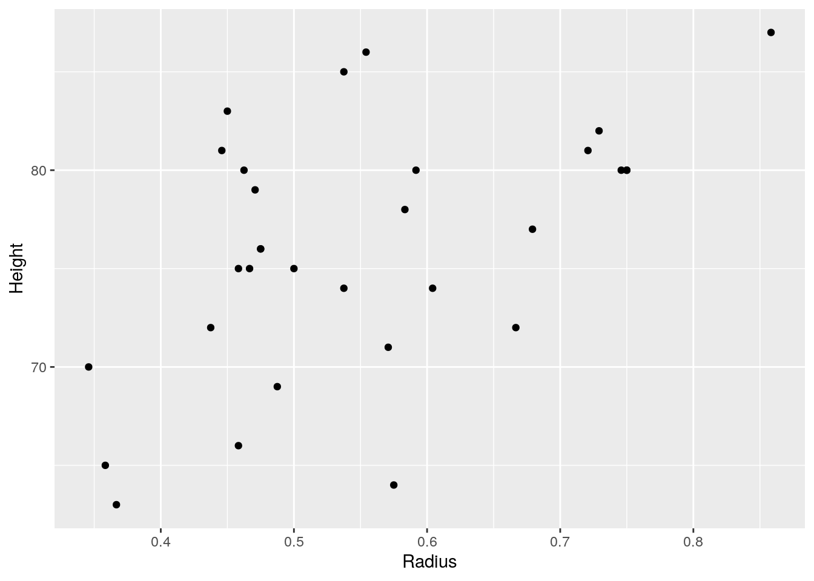
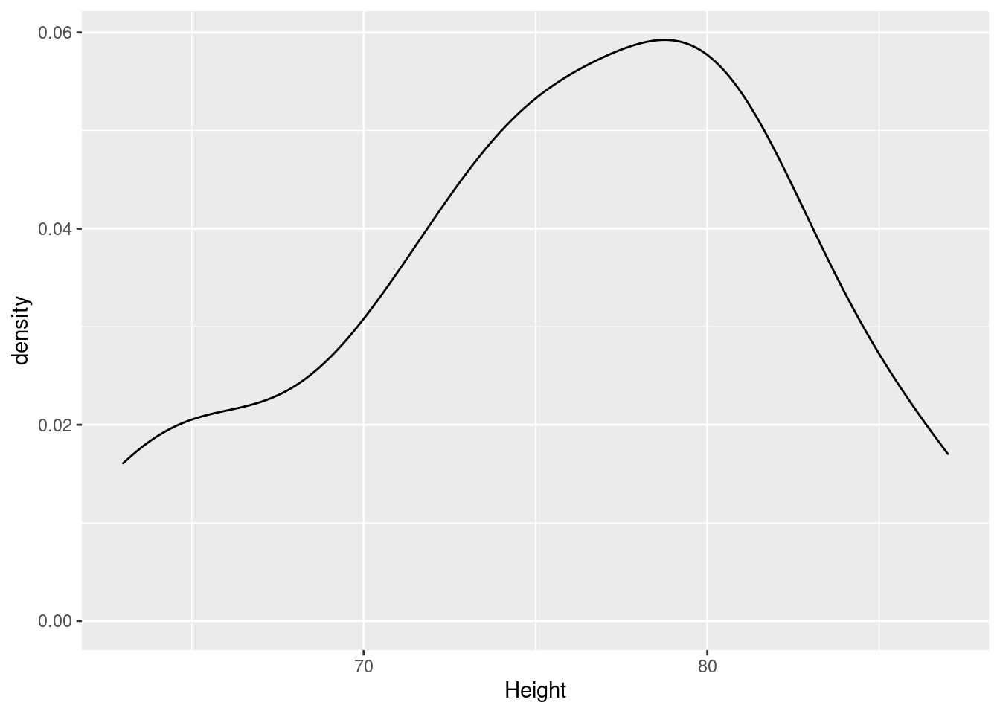
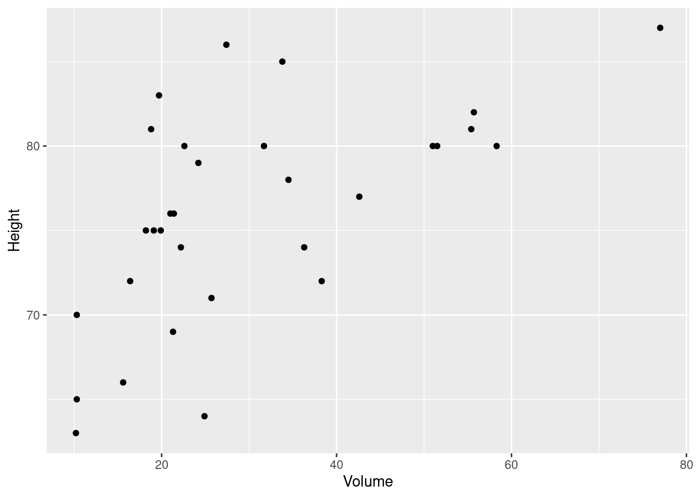
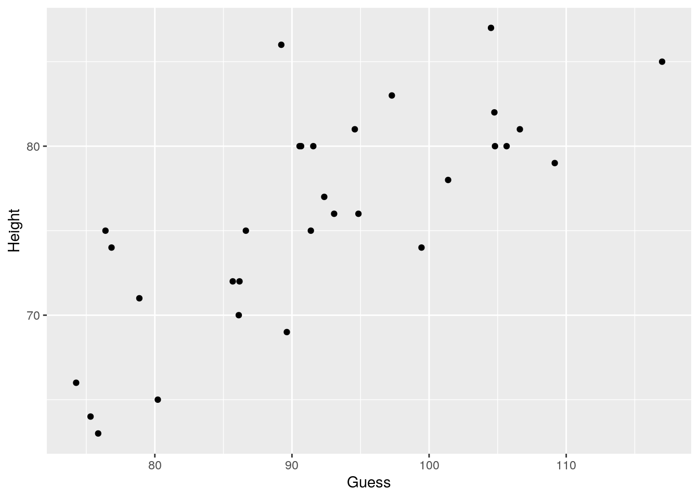
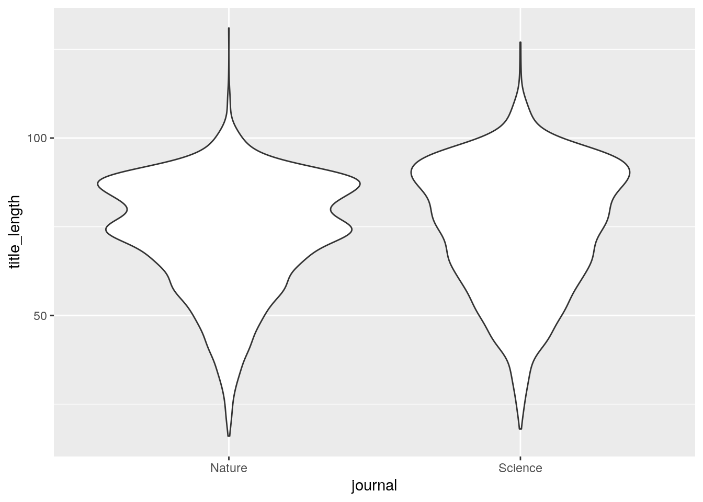
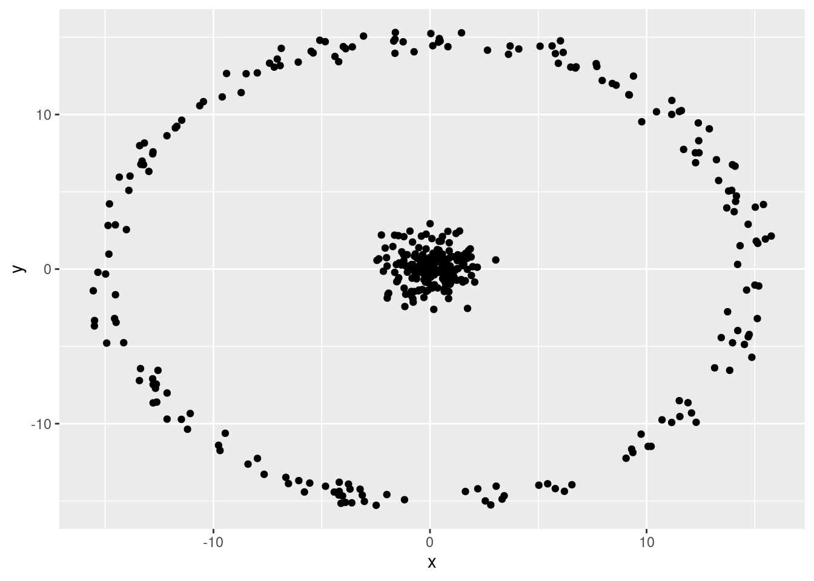
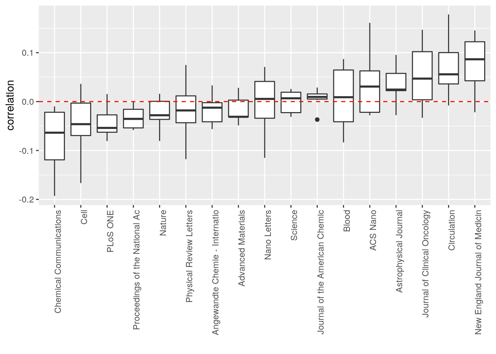
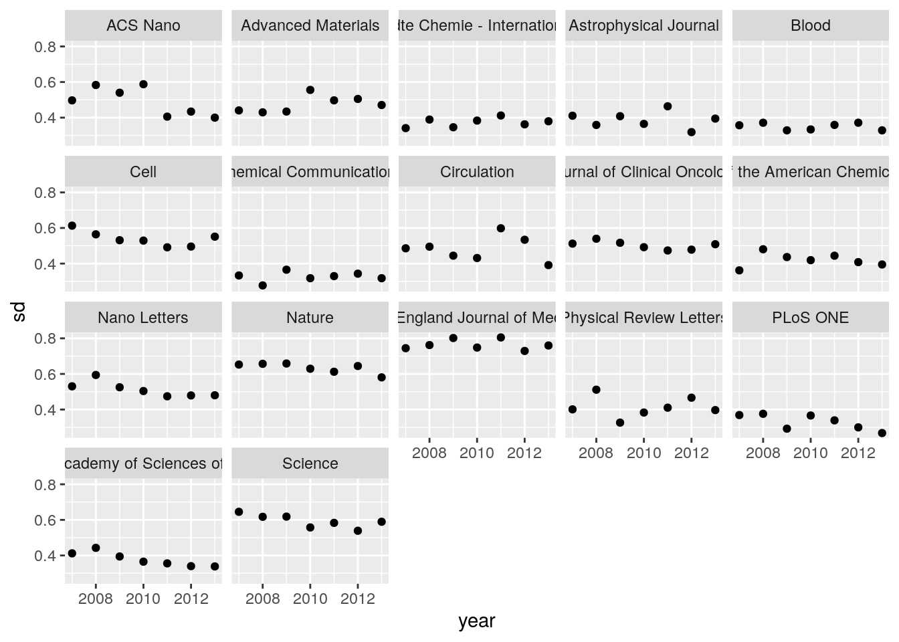

Lecture 13 Model Selection
Cchiù longa è a pinsata cchiù grossa è a minchiata
[the longer the thought, the bigger the bullshit]
— Sicilian proverb
13.1 Goal
For any data you might want to fit, several competing statistical models seem to do a fairly good job. But which model should you use then?
The goal of model selection is to provide you with a disciplined way to choose among competing models. While there is no consensus on a single technique to perform model selection (we will examine some of the alternative paradigms below), all techniques are inspired by Occam’s razor: given models of similar explanatory power, choose the simplest.
But what does “simplest” mean? Measuring a model’s “complexity” is far from trivial, hence the different schools of thought. Some approaches simply count the number of free parameters, and penalize models with more parameters; others take into account how much each parameter should be “fine-tuned” to fit the data; other approaches are based on entirely different premises.
But why should you choose the simplest model? First, simpler models are easier to analyze, so that for example you could make analytical headway into the mechanics of the process you want to model; simpler models are also considered more beautiful. Second, you want to avoid overfitting: each biological data set—however carefully crafted—is noisy, and you want to fit the signal, not the noise. If you include too much flexibility in your model, you will get what looks like an excellent fit for the specific data set, but you will be unable to fit other data sets to which your model should also apply.
13.2 Problems
- Overfitting can lead to wrong inference. (The problem is similar to that of spurious correlations).
- Identifiability of parameters. Sometimes it is hard/impossible to find the best value for a set of parameters. For example, when parameters only appear as sums or products in the model. In general, it is difficult to prove that the set of parameters leading to the maximum likelihood is unique.
- Finding best estimates. For complex models, it might be difficult to find the best estimates for a set of parameters. For example, several areas of the parameter space could yield a good fit, and the good sets of parameters could be separated by areas with poor fit. Then, we might get “stuck” in a sub-optimal region of the parameters space.
13.3 Approaches based on maximum-likelihoods
We start by examining methods that are based on maximum likelihoods. For each data set and model, you find the best fitting parameters (those maximizing the likelihood). The parameters are said to be at their maximum-likelihood estimate.
13.3.1 Likelihood function
Some notation:
\(D \to\) the observed data
\(\theta \to\) the free parameter(s) of the statistical model
\(L(\theta \vert D) \to\) the likelihood function, read “the likelihood of \(\theta\) given the data”
\(\hat{\theta} \to\) the maximum-likelihood estimates (m.l.e.) of the parameters
\(\mathcal L(\theta \vert D) = \log L(\theta \vert D) \to\) the log-likelihood
\(L(\hat{\theta} \vert D) \to\) the maximum likelihood
13.3.2 Discrete probability distributions
The simplest case is that of a probability distribution function that takes discrete values. Then, the likelihood of \(\theta\) given the data is simply the probability of obtaining the data when parameterizing the model with parameters \(\theta\):
\[L(\theta \vert x_j) = P(X = x_j; \theta)\]
Finding the m.l.e. of \(\theta\) simply means finding the value(s) maximizing the probability of recovering the data under the model.
13.3.3 Continuous probability distributions
The definition is more complex for continuous variables (because \(P(X = x; \theta) = 0\) as there are infinitely many values…). What is commonly done is to use the density function \(f(x; \theta)\) and considering the probability of obtaining a value \(x \in [x_j, x_j + h]\), where \(x_j\) is our observed data point, and \(h\) is small. Then:
\[ L(\theta \vert x_j) = \lim_{h \to 0^+} \frac{1}{h} \int_{x_j}^{x_j + h} f(x ; \theta) dx = f(x_j ; \theta) \] Note that, contrary to probabilities, density values can take values greater than 1. As such, when the dispersion is small, one could end up with values of likelihood greater than 1 (or positive log-likelihoods). In fact, the likelihood function is proportional to but not necessarily equal to the probability of generating the data given the parameters: \(L(\theta\vert X) \propto P(X; \theta)\).
In many cases, maximizing the likelihood is equivalent to minimizing the sum of square errors (residuals).
13.4 Likelihoods for linear regression
As you remember, we have considered the normal equations:
\[ Y_i = \beta_0 + \beta_1 X_i + \epsilon_i \] Where the residuals have variance \(\sigma^2\). The likelihood of the parameters is simply the product of the likelihood for each point:
\[ L(\beta_0, \beta_1, \sigma^2 \vert Y) = \prod_i L(\beta_0, \beta_1, \sigma^2 \vert Y_i) = \prod_i f(Y_i; \beta_0, \beta_1, \sigma^2) = \prod_i \frac{1}{\sqrt{2 \pi \sigma^2}} \exp\left(-\frac{(Y_i - (\beta_0 + \beta_1 X_i))^2}{2 \sigma^2}\right) \] We want to choose the parameters such that they maximize the likelihood. Because the logarithm is monotonic then maximizing the likelihood is equivalent to maximizing the log-likelihood:
\[ \mathcal L(\beta_0, \beta_1, \sigma^2 \vert Y) = -\log\left(\sqrt{2 \pi \sigma^2}\right) -\frac{1}{{2 \sigma^2}} \sum_i {(Y_i - (\beta_0 + \beta_1 X_i))^2} \] Showing that by minimizing the sum of squares, we are maximizing the likelihood.
13.5 Likelihood-ratio tests
These approaches contrast two models by taking the ratio of the maximum likelihoods of the sample data based on the models (i.e., when you evaluate the likelihood by setting the parameters to their m.l.e.). The two models are usually termed the null model (i.e., the “simpler” model), and the alternative model. The ratio of \(L_a / L_n\) tells us how many times more likely the data are under the alternative model vs. the null model. We want to determine whether this ratio is large enough to reject the null model and favor the alternative.
Likelihood-ratio is especially easy to perform for nested models.
13.5.0.1 Two nested models
Nested means that model \(\mathcal M_1\) has parameters \(\theta_1\), and model \(\mathcal M_2\) has parameters \(\theta_2\), such that \(\theta_1 \in \theta_2\) — by setting some of the parameters of \(\mathcal M_2\) to particular values, we recover \(\mathcal M_1\).
For example, suppose we want to model the height of trees. We measure the response variable (height of tree \(i\), \(h_i\)) as well as the girth (\(g_i\)). We actually have a data set that ships with R that contains exactly this type of data:
## Girth Height Volume
## 1 8.3 70 10.3
## 2 8.6 65 10.3
## 3 8.8 63 10.2
## 4 10.5 72 16.4
## 5 10.7 81 18.8
## 6 10.8 83 19.7The Height of these cherry trees is measured in feet; the Girth is the diameter in inches, and the Volume is the measuring the amount of timber in cubic feet. Let’s add a Radius measured in feet:
Let’s look at the distribution of three heights:
A possible simple model is one that says that all tree heights have heights taken from a Gaussian distribution with a given mean. In the context of linear regression, we can write the model \(\mathcal M_0\):
\[ h_i = \theta_0 + \epsilon_i \] where we assume that the errors \(\epsilon_i \overset{\text{iid}}{\sim} \mathcal N(0, \sigma^2)\). Now fit the model, obtaining \(\hat{\theta_0}\), and compute the maximum log-likelihood \(\mathcal L_0(\hat{\theta_0}, \hat{\sigma}^2 \vert h)\).
In R, we would call:
M0 <- lm(data = trees, Height ~ 1) # only intercept
# the m.l.e. of theta_0
theta0_M0 <- M0$coefficients[1]
theta0_M0## (Intercept)
## 76## 'log Lik.' -100.8873 (df=2)Now let’s plot the height of the trees vs. their radius:

And compute their correlation:
## [1] 0.5192801Given the positive correlation between radius and height, we can build a more complex model in which the height also depends on radius (\(\mathcal M_1\)):
\[ h_i = \theta_0 + \theta_1 r_i + \epsilon_i \] as for model \(\mathcal M_0\), fit the parameters (note that \(\hat{\theta_0}\) for model \(\mathcal M_0\) will in general be different from \(\hat{\theta_0}\) for model \(\mathcal M_1\)), and compute \(\mathcal L_1(\hat{\theta_0},\hat{\theta_1},\hat{\sigma}^2 \vert h)\). These two models are nested, because when setting \(\theta_1 = 0\) we recover \(\mathcal M_0\).
In R:
M1 <- lm(data = trees, Height ~ Radius) # intercept and slope
theta0_M1 <- M1$coefficients[1]
theta1_M1 <- M1$coefficients[2]
# note that now theta_0 takes a different value:
print(c(theta0_M1, theta0_M1))## (Intercept) (Intercept)
## 62.03131 62.03131## 'log Lik.' -96.01663 (df=3)Which model should we use? You can see that adding an extra parameter improved the likelihood somewhat.
Enter the likelihood-ratio test. We want to know whether it’s worth using the more complex model, and to do this we need to calculate a likelihood-ratio statistics. We’re helped by Wilks’ theorem: as the sample size \(n \to \infty\), the test statistics \(2 \log(L_1 / L_0)\) is asymptotically \(\chi^2\) distributed with degrees of freedom equal to the difference in the number of parameters between \(\mathcal M_1\) and \(\mathcal M_0\).
While there are many caveats1 this method is commonly used in practice.
## [1] "2 log(L1 / L0)"## [1] 9.74125# difference in parameters
df0 <- length(M0$coefficients)
df1 <- length(M1$coefficients)
k <- df1 - df0
print("Number of extra parameters")## [1] "Number of extra parameters"## [1] 1# calculate (approximate) p-value
res <- pchisq(lrt, k, lower.tail = FALSE)
print(paste("p-value using Chi^2 with", k, "degrees of freedom"))## [1] "p-value using Chi^2 with 1 degrees of freedom"## [1] 0.0018In this case, the likelihood-ratio test would favor the use of the more complex model.
- Pros: Straightforward; well-studied for nested models.
- Cons: Difficult to generalize to more complex cases.
13.5.0.2 Adding more models
The data also contains a column with the volume. Let’s take a look:

And look at the correlation
## [1] 0.5982497We can build another model:
Compute the log likelihood:
## 'log Lik.' -94.02052 (df=3)and test whether that’s better than the (nested) model 0:
## [1] "2 log(L2 / L0)"## [1] 13.73348# difference in parameters
df0 <- length(M0$coefficients)
df1 <- length(M2$coefficients)
k <- df1 - df0
print("Number of extra parameters")## [1] "Number of extra parameters"## [1] 1# calculate (approximate) p-value
res <- pchisq(lrt, k, lower.tail = FALSE)
print(paste("p-value using Chi^2 with", k, "degrees of freedom"))## [1] "p-value using Chi^2 with 1 degrees of freedom"## [1] 2e-04Also in this case, the likelihood-ratio test would favor the use of the more complex model. But how can we contrast the two more complex models \(\mathcal M_1\) and \(\mathcal M_2\)? They are not nested!
In fact, we can even concoct another model that uses a mix of radius and volume. If we assume that trees are cylinders, then we have \(V = \pi r^2 h\), and as such \(h = V / (\pi r^2)\). We can test whether this is a good approximation by creating a new variable:

## [1] 0.7537768Pretty good! Let’s add it to our list of models:
## 'log Lik.' -87.87121 (df=3)13.6 AIC
Of course, in most cases the models that we want to contrast need not to be nested. Then, we can try to penalize models according to the number of free parameters, such that more complex models (those with many free parameters) should be associated with much better likelihoods to be favored.
In the early 1970s, Hirotugu Akaike proposed “an information criterion” (AIC, now known as Akaike’s Information Criterion), based, as the name implies, on information theory. Basically, AIC is measuring (asymptotically) the information loss when using the model in lieu of the actual data. Philosophically, it is rooted in the idea that there is a “true model” that generated the data, and that several possible models can serve as its approximation. Practically, it is very easy to compute:
\[AIC = -2 \mathcal L(\theta \vert D) + 2 k\]
where \(k\) is the number of free parameters (e.g., 3 for the simplest linear regression [intercept, slope, variance of the residuals]). In R, many models provide a way to access their AIC score:
## [1] 205.7745## [1] 198.0333## [1] 194.041## [1] 181.7424You can see that AIC favors the cylinder model over the others. Typically, a difference of about 2 is considered “significant”, though of course this really depends on the size of the data, the values of AIC, etc.
- Pros: Easy to calculate; very popular.
- Cons: Sometimes it is difficult to “count” parameters; why should each parameter cost the same, when they have different effects on the likelihood?
13.7 Other information-based criteria
The approach spearheaded by Akaike has been followed by a number of researchers, giving rise to many similar criteria for model selection. Without getting too much into the details, here are a few pointers:
- Bayesian Information Criterion \(BIC = -2 \mathcal L(\theta \vert D) + k \log(n)\) where \(n\) is the number of data points. Penalizes parameters more strongly when there are much data.
- Hannan–Quinn information criterion \(HQC = -2 \mathcal L(\theta \vert D) + k \log(\log(n))\)
13.8 Bayesian approaches to model selection
The approaches we’ve examined before are based on “point-estimates”, i.e., only consider the parameters at their maximum likelihood estimate. Bayesian approaches, on the other hand, consider distributions of parameters. As such, parameters that give high likelihoods for a restricted range of values are deemed “more expensive” (because they are “more important” or need to be “fine-tuned”) than those yielding about the same likelihood for a wide range of values.
13.8.1 Marginal likelihoods
A very beautiful approach is based on marginal likelihoods, i.e., likelihoods obtained integrating the parameters out. Unfortunately, the calculation becomes difficult to perform by hand for complex models, but it provides a good approach for simple models. In general, we want to assess the “goodness” of a model. Then, using Bayes’ rule:
\[ P(M\vert D) = \frac{P(D\vert M) P(M)}{P(D)} \]
Where \(P(M\vert D)\) is the probability of the model given the data; and \(P(D)\) is the “probability of the data” (don’t worry, this need not to be calculated), and \(P(M)\) is the prior (the probability that we choose the model before seeing the data). \(P(D\vert M)\) is a marginal likelihood: we cannot compute this directly, because the model requires the parameters \(\theta\), however, we can write
\[ P(D\vert M) = \int P(D\vert M,\theta)P(\theta\vert M) d\theta \]
where \(P(D\vert M,\theta)\) is the likelihood, and \(P(\theta\vert M)\) is a distribution over the parameter values (typically, the priors).
For example, let’s compute the marginal likelihood for the case in which we flip a coin \(n = a + b\) times, and we obtain \(a\) heads and \(b\) tails. Call \(\theta\) the probability of obtaining a head, and suppose that \(P(\theta\vert M)\) is a uniform distribution. Then:
\[ P(a,b\vert M) = \int_0^1 P(a,b\vert M,\theta) d\theta = \int_0^1 \binom{a+b}{a} \theta^{a} (1-\theta)^{b} d\theta = \frac{1}{a+b+1} = \frac{1}{n+1} \]
Interestingly, the marginal likelihood can be interpreted as the expected likelihood when parameters are sampled from the prior.
13.8.2 Bayes factors
Take two models, and assume that initially we have no preference \(P(M_1) = P(M_2)\), then:
\[ \frac{P(M_1\vert D)}{P(M_2\vert D)} = \frac{P(D\vert M_1)P(M_1)}{P(D\vert M_2)P(M_2)} = \frac{P(D\vert M_1)}{P(D\vert M_2)} \]
The ratio is called the “Bayes factor” and provides a rigorous way to perform model selection.
13.8.3 Bayes factors in practice
In practice, Bayes Factors can be estimated from MCMC. While we’re not going to get into this here, we can use a package that a) automatically sets the priors for all the variables (close to the philosophy known as “Objective Bayes”); b) performs the calculation of the Bayes Factors for us.
Let’s build very many models. Load the data:
## Girth Height Volume
## 1 8.3 70 10.3
## 2 8.6 65 10.3
## 3 8.8 63 10.2
## 4 10.5 72 16.4
## 5 10.7 81 18.8
## 6 10.8 83 19.7And build the models:
##
## Call:
## lm(formula = Height ~ ., data = trees)
##
## Residuals:
## Min 1Q Median 3Q Max
## -6.7669 -2.4752 -0.2354 1.9335 10.5319
##
## Coefficients: (1 not defined because of singularities)
## Estimate Std. Error t value Pr(>|t|)
## (Intercept) 22.6671 16.2947 1.391 0.175562
## Girth 1.5127 1.2278 1.232 0.228543
## Volume -0.2045 0.2572 -0.795 0.433505
## Radius NA NA NA NA
## Guess 0.4291 0.1034 4.152 0.000296 ***
## ---
## Signif. codes: 0 '***' 0.001 '**' 0.01 '*' 0.05 '.' 0.1 ' ' 1
##
## Residual standard error: 4.023 on 27 degrees of freedom
## Multiple R-squared: 0.6413, Adjusted R-squared: 0.6014
## F-statistic: 16.09 on 3 and 27 DF, p-value: 3.391e-06## 'log Lik.' -84.99667 (df=5)Perform selection among all models nested into lm_all:

These ratios measure how many times more probable the model is compared to that with only the intercept (assuming initially that all models are equiprobable). Note that the Bayes Factors automatically penalize for overly complex models (triplets/quadruplets are ranked after pairs or even only Guess).
- Pros: Elegant, straigthforward interpretation.
- Cons: Difficult to compute for complex models; requires priors.
13.9 Other approaches
13.9.1 Minimum description length
Another completely different way to perform model selection is based on the idea on “Minimum Description Length”, where models are seen as a way to “compress” the data, and the model leading to the strongest compression should be favored. While we do not cover it here, you can read about it in this paper.
13.9.2 Cross validation
One very robust method to perform model selection, often used in machine learning, is cross-validation. The idea is simple: split the data in three parts: a small data set for exploring; a large set for fitting; a small set for testing (for example, 5%, 75%, 20%). You can use the first data set to explore freely and get inspired for a good model. These data are then discarded. You use the largest data set for accurately fitting your model(s). Finally, you validate your model or select over competing models using the last data set.
Because you haven’t used the test data for fitting, this should dramatically reduce the risk of overfitting. The downside of this is that we’re wasting precious data. There are less expensive methods for cross validation, but if you have much data, or data is cheap, then this has the virtue of being fairly robust.
13.9.2.1 Exercise: Do shorter titles lead to more citations?
To test the power of cross-validation, we are going to examine a bold claim by Letchford et al., 2015: that papers with shorter titles attract more citations than those with longer titles. We are going to use their original data:
Letchford A, Moat HS, Preis T (2015) The advantage of short paper titles. Royal Society Open Science 2(8): 150266.
# original URL
# https://datadryad.org/stash/dataset/doi:10.5061/dryad.hg3j0
dt <- read_csv("data/LMP2015.csv")## Parsed with column specification:
## cols(
## year = col_double(),
## journal = col_character(),
## title_length = col_double(),
## cites = col_double()
## )The data set reports information on the top 20000 articles for each year from 2007 to 2013. The Author’s claim is that shorter titles lead to more citations:
## # A tibble: 7 x 2
## year correlation
## <dbl> <dbl>
## 1 2007 -0.0535
## 2 2008 -0.0687
## 3 2009 -0.0560
## 4 2010 -0.0655
## 5 2011 -0.0525
## 6 2012 -0.0528
## 7 2013 -0.0451As you can see, title length is anti-correlated (using rank correlation) with the number of citations.
There are several problems with this claim:
- The authors selected papers based on their citations. As such their claim would need to be stated as “among top-cited papers there is a correlation”.
- The journals cover a wide array of disciplines. The title length could reflect different publishing cultures.
- Most importantly, different journals have different requirements for title lengths. For example, Nature requires titles to be less than 90 characters:
dt%>% filter(journal %in% c("Nature", "Science")) %>%
ggplot() + aes(x = journal, y = title_length) + geom_violin()
But then, is the effect the Authors are reporting only due to the fact that high-profile journals mandate short titles? Let’s see whether their claims hold water when considering specific journals:
# only consider journals with more than 1000 papers in the data set
dt <- dt %>%
group_by(journal) %>%
mutate(num_papers = n())%>%
filter(num_papers > 1000) %>%
ungroup()
# now compute correlation and plot
dt %>%
group_by(year, journal) %>%
summarise(correlation = cor(title_length, cites, method = "kendall")) %>%
ggplot() +
aes(x = reorder(substr(journal, 1, 30), (correlation)), y = correlation) +
geom_boxplot() +
geom_hline(yintercept = 0, colour = "red", linetype = 2) +
theme(axis.text.x = element_text(angle = 90, hjust = 1)) + # rotate labels x axis
xlab("")
It seems that in several medical journals (NEJM, Circulation, J Clin Oncology) longer titles fare better than shorter ones. In Nature and PNAS we see a negative correlation, while Science gives no clear trend.
Let’s look at the mean and standard deviation of citations by journal/year
dt %>%
group_by(journal, year) %>%
summarize(mean = mean(log(cites + 1)), sd = sd(log(cites + 1))) %>%
ggplot() +
aes(x = year, y = mean) +
geom_point() +
facet_wrap(~journal)
dt %>%
group_by(journal, year) %>%
summarize(mean = mean(log(cites + 1)), sd = sd(log(cites + 1))) %>%
ggplot() +
aes(x = year, y = sd) +
geom_point() +
facet_wrap(~journal)
13.9.2.2 Two models
Let’s consider two competing models.
Model1: each journal year has its mean
\(\log(\text{cits} + 1) \sim \text{journal}:\text{year}\)
Model2: the length of titles influences citations
\(\log(\text{cits} + 1) \sim \text{journal}:\text{year} + \text{title-length}\)
We are going to fit the model using 90% of the data; we are going to use the remaining data for cross-validation.
set.seed(4)
dt <- dt %>% mutate(logcit = log(cites + 1))
# sample 10% of the data
data_test <- dt %>% sample_frac(0.3)
data_fit <- anti_join(dt, data_test) # get all those not in data_test## Joining, by = c("year", "journal", "title_length", "cites", "num_papers", "logcit")Now fit the models:
M1 <- lm(logcit ~ factor(year)*journal, data = data_fit)
M2 <- lm(logcit ~ factor(year)*journal + title_length, data = data_fit)Now let’s try to predict out-of-fit the data that we haven’t used:
M1_predictions <- predict(M1, newdata = data_test)
SSQ_M1 <- sum((log(data_test$cites + 1) - M1_predictions)^2)
M2_predictions <- predict(M2, newdata = data_test)
SSQ_M2 <- sum((log(data_test$cites + 1) - M2_predictions)^2)
print(SSQ_M1)## [1] 2465.712## [1] 2465.96We do not gain anything by including the information on titles.
- Pros: Easy to use; quite general; asymptotically equivalent to AIC.
- Cons: Sensitive to how the data was split (you can average over multiple partitions); need much data (instability in parameter estimates due to “data loss”)
see Pinheiro, José C.; Bates, Douglas M. (2000), Mixed-Effects Models in S and S-PLUS, Springer-Verlag, pp. 82–93↩︎